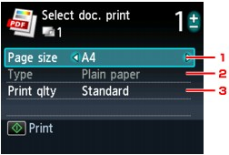

You can print PDF files scanned using the Operation Panel of the machine or made using MP Navigator EX (application software bundled with the machine) from a memory card or USB flash drive.
 Note
Note-
You can print PDF files from a memory card/USB flash drive which satisfy the following conditions.
-
PDF files scanned using the Operation Panel of the machine and saved on a memory card/USB flash drive with Format set to PDF or Compact PDF (Extension: .pdf)
For details on scanning using the Operation Panel of the machine, see Saving Scanned Data on the Memory Card/USB Flash Drive Using the Operation Panel of the Machine.
-
PDF files made using MP Navigator EX (application software bundled with the machine) with PDF Compression on the PDF Settings dialog set to Standard or High (Extension: .pdf)
Except for the following data:
-Encrypted data
-Data including images scanned at 9601 pixels or more in the vertical and horizontal directions
For details on making PDF files using MP Navigator EX, refer to Utilizing Images in MP Navigator EX.
-
-
Make sure that the machine is turned on.
-
Load the plain paper in the Cassette.
-
Press the CARD button.
-
Insert the memory card into the Card Slot or insert the USB flash drive into the Direct Print Port.
The document list is displayed.
 Important
Important-
You cannot use the memory card and USB flash drive at the same time.
-
If you already insert the memory card or the USB flash drive to save the received faxes automatically, you cannot print the photographs even when the memory card or the USB flash drive which includes the photo data is set.
In this case, set Auto save setting in FAX settings to OFF and remove the memory card or the USB flash drive, then insert the memory card or the USB flash drive contains the photo data.
Note-
For information on how to insert the memory card/USB flash drive, or information on the types of the memory card compatible with the machine, refer to Printing Photos.
-
If both photo files and PDF files are saved on the memory card/USB flash drive, the confirmation screen to select which file you print is displayed. Select Print documents, then press the OK button.
-
If no printable document (PDF files) is saved on the memory card/USB flash drive, Data of supported types are not saved. is displayed on the LCD.
-
The screen displayed when you select Select doc. print and the one displayed when you insert the memory card/USB flash drive are the same. For details on how to select Select doc. print from the card menu, see How to Select a Card Menu.
-
File names may not be displayed properly on the document list if the file name is long or includes incompatible characters.
-
When the document list is displayed, pressing the center Function button displays the preview screen. On the preview screen, the first page of each PDF file is displayed on the LCD. In addition, if a document is in landscape format, it will be displayed rotated by 90 degrees.
-
For some PDF files, it may take longer to display the preview or part of the preview may be cropped.
-
The name of the PDF files is displayed even though the PDF files cannot be printed using the Operation Panel of the machine. If one of the following conditions is applicable to the PDF files, they are not printable.
-
PDF files saved using application software other than MP Navigator EX (application software bundled with the machine)
-
PDF files for which the preview screen is not available ("?" is displayed on the preview screen.)
-
-
It is recommended you confirm whether a PDF file is printable. When the document list is displayed, pressing the right Function button displays the Details screen. If one of the following conditions is applicable to the PDF file, it is not printable.
-
Information on the Details screen cannot be displayed.
-
Characters other than MP Navigator EX are displayed on Created with.
-
-
The PDF files made using application software other than MP Navigator EX (application software bundled with the machine) are not printable even if they are saved using MP Navigator EX.
-
-
Select the document to print, then press the OK button.
Use the

 button to select the document to print on the list view and use the
button to select the document to print on the list view and use the 
 button to select the document to print on the preview.
button to select the document to print on the preview.The print settings confirmation screen is displayed.
-
Specify the settings as necessary.
-
Page size
Select the page size.
-
Type (Media type)
The paper type is set to Plain paper.
-
Print qlty (Print quality)
Specify the print quality.
-
-
Specify the number of copies by using the + or - button.
-
Press the Color button.
The machine starts printing.
Note-
You can print up to 100 pages at a time. If you try to print more than 100 pages of a PDF file, The specified PDF file contains too many pages. The pages exceeding the number of printable pages will not be printed. Continue? is displayed on the LCD. Press the OK button to start printing. If you need to print more than 100 pages of a PDF file, print them from a computer.
-
If a document is a landscape format, it will be printed rotated by 90 degrees.
-
If the document size is larger than the page size specified on the machine, the document will be printed at a reduced size. In this case, thin lines on the document may not be printed or images may be misaligned.
-
For some PDF files, an error message may be displayed before printing starts or while printing is in progress.
For details, see An Error Message Is Displayed on the LCD.